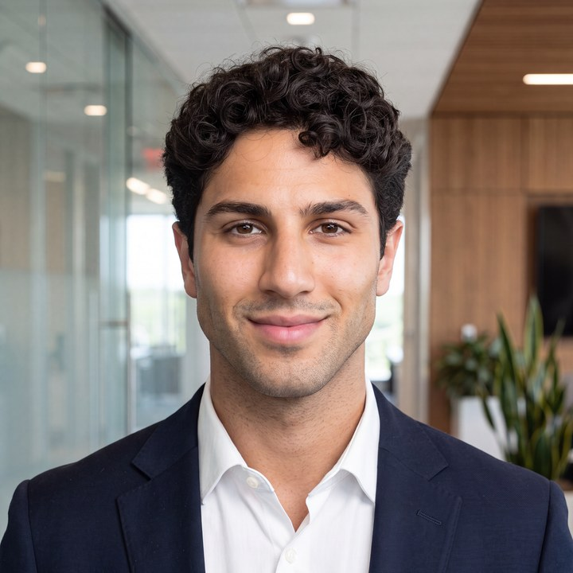

Gravity
trygravity.aiThe ad network for AI, serving millions of native ads a day inside LLM conversations. We supported engineering hiring while the team scaled at full speed.
The invite is in your inbox. A few minutes here will make the call worth a lot more.
It's in your inbox now. Add it before it gets buried, and set a reminder so the time holds.
The questions founders ask us most, answered straight, so nothing eats the call.
What to expect
You booked thirty minutes with Alland Ali, founder of ConnectPath. Here is exactly how it goes, including the parts worth being skeptical about.
Before our call
Who you'll meet

Founder & CEO, ConnectPath
You'll be talking to Alland directly, not a sales rep. He runs every search like it's his own company on the line: founder to founder, on-site with your team, inside your process, and accountable to the 21-day clock and the guarantees behind it. On the call he'll pressure-test your role and tell you honestly whether the embedded model is the right fit.
Track record
Vetted candidates in week one while we scaled engineering at full speed. Hit $4M ARR in five months.
Founder Ian Crosby previously built and scaled a company from the ground up. ConnectPath ran the search like part of the team.
One of the fastest-growing teams in agency fintech. Exceptional talent, matched to how the team actually builds.
Founder Peter Grafe needed senior engineers fast. We embedded and delivered a vetted shortlist in week one.
Vetted candidates in week one while we scaled engineering at full speed. Hit $4M ARR in five months.
Founder Ian Crosby previously built and scaled a company from the ground up. ConnectPath ran the search like part of the team.
One of the fastest-growing teams in agency fintech. Exceptional talent, matched to how the team actually builds.
Founder Peter Grafe needed senior engineers fast. We embedded and delivered a vetted shortlist in week one.
Proof
The pattern is always the same: vetted candidates in week one, first hire in 21 days.
The ad network for AI, serving millions of native ads a day inside LLM conversations. We supported engineering hiring while the team scaled at full speed.
Autonomous AI bookkeeping for software startups, from Bench founder Ian Crosby. We ran the search like part of the team.
The ad-spend platform and charge card for agencies, up 400% since launch. We connected exceptional talent with a fast-moving team.
AI marketing optimization from ex-Tesla growth leaders, backed by Caffeinated Capital. We embedded and delivered a vetted senior shortlist in week one.
Trusted by venture-backed founders